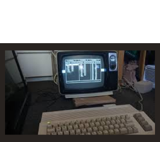
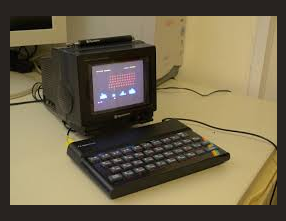
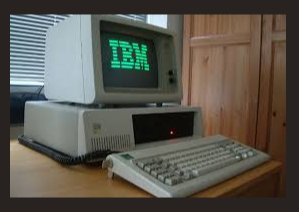
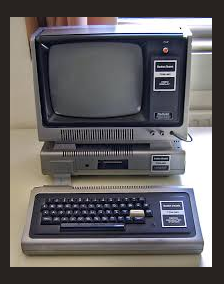

ZX Spectrum
Los ordenadores retro, populares durante las décadas de 1980 y 1990, fueron fundamentales para el desarrollo de la informática personal y los videojuegos. Estos equipos no solo fueron una ventana a la programación y los juegos, sino que también marcaron el inicio de la cultura digital tal como la conocemos hoy.

IBM PC (5150)

Atari ST

Tandy TRS-80